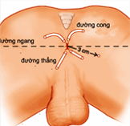
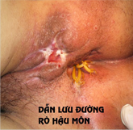
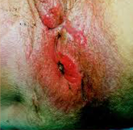
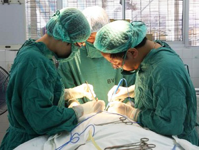

Rò hậu môn
Rò hậu môn Là bệnh gây ra do nhiễm trùng ở các khe và nhú trong ống hậu môn , từ đó làm viêm và tụ mủ ở các tuyến hậu môn ở giữa hai cơ thắt hậu môn , sau đó phá miệng ra da vùng cạnh hậu môn. Từ dân gian thường dùng để mô tả bệnh này là bệnh mạch lươn
  
NGUYÊN NHÂN
Áp xe quanh hậu môn và rò hậu môn là do cùng nguyên nhân và thể hiện trên lâm sàng hai dạng khác nhau, áp xe ở dạng cấp tính và rò ở dạng mãn tính.
Nguyên nhân rò là do viêm nhiễm xuất phát từ tuyến hậu môn do vi khuẩn như trực khuẩn coli, tụ cầu trùng, liên cầu trùng...
Ngoài ra có nhiều bệnh lý có thể đưa đến rò hậu môn
Bệnh lao
Bệnh Crohn
Nấm actinomycosis
Vật vùng hậu môn và tầng sinh môn
Ung thư hậu môn trực tràng
Chấn thương do đụng đập, do phẫu thuật như phẫu thuật tiền liệt tuyến
Cắt tầng sinh môn lúc sanh, mổ trĩ
Chiếu xạ vùng chậu
Ung thư bạch huyết
triệu chứng
Bệnh nhân bị nhiễm trùng quanh hậu môn thường có xu hướng đến khám sớm, 2-3 ngày sau triệu chứng đầu tiên xuất hiện, với triệu chứng đau và có một khối căng sờ được ở rìa lỗ hậu môn.
Bệnh nhân với áp xe ở sâu hơn có xu hướng đến bệnh viện trễ hơn, với những than phiền mơ hồ hơn, có sốt và thấy 1 khối căng, đổi màu da quanh hậu môn.
Bệnh nhân với lỗ rò đã hình thành thường có tiền sử có những cơn đau ngắt quãng và mủ chảy ra từ một lỗ ở tầng sinh môn, cơn đau tăng lên khi mủ không chảy ra và giảm đau khi có mủ thoát ra. Trường hợp có lỗ trong ở trực tràng to thì có thể thấy phân chảy ra ở lỗ rò ngoài.
Nếu bệnh nhân bị áp xe quanh hậu môn, nhìn sẽ thấy một khối phồng căng ở cạnh hậu môn, đè lên khối phồng đó rất đau.
Nếu bệnh nhân bị rò hậu môn nhìn sẽ thấy có một mụn mủ nổi lên cạnh hậu môn, trên mặt mụn mủ có một mài, nặn mụn mủ đó thấy có ít giọt mủ chảy ra. Do mụn mủ chảy mủ từng đợt và lượng mủ không nhiều, nên bệnh nhân thường bỏ qua không đi khám, chỉ đến khi mụn mủ chảy mủ nhiều ảnh hưởng đến sinh hoạt hàng ngày bệnh nhân mới chịu đi khám bệnh.
tác hại
ẢNH HƯỞNG CHỨC NĂNG BÌNH THƯỜNG CỦA HẬU MÔN
Ảnh hưởng chức năng bình thường của hậu môn: rò hậu môn cũng giống như viêm ruột,có thể kéo dài trong nhiều ngày nhiều tháng thậm chí nhiều năm,nếu chọn không đúng phương pháp điều trị,hoặc chăm sóc không đúng cách sau điều trị sẽ dẫn tới kết quả tái phát.Nếu tái phát nhiều lần,mủ có thể đục thủng lỗ rò lây lan sang các vùng lân cận,hình thành nhiều lỗ rò hậu môn,không chỉ gây khó khăn trong việc điều trị,còn ảnh hưởng nghiêm trọng đến chức năng sinh lý bình thường của hậu môn.
Ô NHIỄM DO MỦ
Khi hình thành lỗ rò ,nước mủ sẽ thải ra ngoài,nếu hoạt động nhiều mủ sẽ thải ra nhiều hơn.Đầu tiên là nhiễm trùng đồ lót,sau đó nhiễm trùng da,do bị kích thích và ma sát nhiều thì tình trạng ngứa và đau sẽ liên tục xuất hiện.Kết quả là ảnh hưởng trực tiếp đến sức khỏe,công việc và học tập.
ẢNH HƯỞNG THIẾU MÁU
Cũng như tình trạng ra máu ở bệnh trĩ,ra máu trong thời gian ngắn thì không ảnh hưởng nhiều,nhưng ra máu quá nhiều hoặc trong thời gian dài,sẽ xuất hiện tình trạng thiếu chất sắt,dẫn đến tình trạng thiếu máu.
NGUY HẠI CÁC CƠ QUAN LÂN CẬN
Rò hậu môn kéo dài có thể ảnh hưởng rò trực tràng âm đạo,rò trực tràng niệu đạo,rò trực tràng bàng quang..Như vậy,nhất định sẽ nguy hại đến các cơ quan lân cận.Ngoài ra,nếu nhiều năm chưa khỏi(chưa khỏi triệt để),khả năng phát sinh ung thư rất cao.
Phương pháp
Kĩ thuật xâm lấn tối thiểu HCPT thế hệ thứ 3 được sử dụng trong điều trị bệnh rò hậu môn đem lại hiệu quả cao cho người bệnh. Khi điều trị bằng cao tần, điện kẹp sẽ nhanh chóng thủy phân mấu trĩ, điện trở kháng của các tổ chức sinh vật tăng lên. Khi điện trở kháng này kết hợp với trở kháng mà thiết bị sản sinh ra, máy sẽ tự báo động, tức là đã đạt được hiệu quả điều trị, giải quyết được vấn đề kĩ thuật về việc đặt giờ. Hệ thống kiểm tra do máy tính điều khiển, hình ảnh rõ nét, chẩn đoán chính xác, có thể dừng ảnh, lưu, quay lại, phóng to, phân tích, định lượng...
Phương pháp có những ưu điểm dưới đây
1. Ít đau: trong quá trình phẫu thuật sẽ gây tê cục bộ hoặc toàn bộ, giảm thiểu đau đớn cho người bệnh.
2. Xâm lấn tối thiểu, an toàn cao: toàn bộ quá trình phẫu thuật được khống chế tỉ mỉ bởi máy tính, trong khi phẫu thuật và sau khi phẫu thuật ít xâm lấn, an toàn cao và đáng tin cậy.
3, Hồi phục nhanh: thời gian nằm viện ngắn, sau khi phẫu thuật vết thương hồi phục nhanh, không ảnh hưởng đến các chức năng bình thường của hậu môn.
4, Giảm khả năng tái phát: phương pháp này đã giúp cho rất nhiều bệnh nhân hồi phục sức khỏe một cách thành công, qua quan sát và theo dõi cho thấy tỉ lệ tái phát là rất thấp.
5, Tính chính xác cao: sử dụng kĩ thuật số hóa thị giác giúp xác định một cách chính xác vị trí tổn thương rò hậu môn, hỗ trợ cho tiểu phẫu diễn ra thuận lợi. Điều quan trọng khi điều trị rò hậu môn là trong các thao tác phẫu thuật điều trị cụ thể, nhất thiết phải tìm kiếm tỉ mỉ lỗ rò, tránh cắt đứt vòng hậu môn trực tràng. Lựa chọn kĩ thuật xâm lấn tối thiểu là phương pháp điều trị khá tốt hiện nay, giảm thiểu tái phát về sau.
"Điều quan trọng khi điều trị rò hậu môn là trong các thao tác phẫu thuật điều trị cụ thể, nhất thiết phải tìm kiếm tỉ mỉ lỗ rò, tránh cắt đứt vòng hậu môn trực tràng. Lựa chọn kĩ thuật xâm lấn tối thiểu là phương pháp điều trị khá tốt hiện nay, giảm thiểu tái phát về sau."
Lời khuyên B.Sỹ
1. Khi hậu môn có dấu hiệu nóng rát khó chịu cần kịp thời đi kiểm tra, thăm khám để tìm ra nguyên nhân và kịp thời điều trị.
2. Tích cực điều trị: rò hậu môn có thể dẫn đến các bệnh như áp xe hậu môn trực tràng, viêm loét đại tràng, bệnh Crohn
3. Kịp thời điều trị bệnh viêm xoang hậu môn, viêm tránh dẫn đến các bệnh về áp xe hậu môn trực tràng và rò hậu môn
4. Phòng ngừa táo bón và tiêu chảy có ý nghĩa rất quan trọng đối với với việc phòng ngừa bệnh áp xe hậu môn trực tràng, do đại tiện phân cứng dễ khiến cho hậu môn bị bầm tím, cùng với sự xâm nhập của vi khuẩn dễ dẫn đến nhiễm trùng. Hầu hết tiêu chảy đều kèm theo viêm trực tràng và viêm xoang hậu môn có thể khiến cho triệu chứng viêm phát triển nặng hơn.
5. Hình thành thói quen ăn đi đại tiện tốt, sau khi đi đại tiện nên vệ sinh hậu môn để cho hậu môn luông sạch sẽ góp phần tích cực vào việc ngăn ngừa nhiễm trùng.
6. Xây dựng chế độ ăn uống hợp lí, có lợi cho sức khỏe. Rò hậu môn có liên quan trực tiếp tới việc hậu môn nóng, ẩm ướt vì vậy đối với các thức ăn béo ngậy nhiều dầu mỡ dễ gây nóng và ẩm ướt hậu môn không nên ăn nhiều. Nên ăn nhiều thực phẩm giàu vitamin như đậu xanh, dưa, củ cải và các loạirau xanh, trái cây khác.